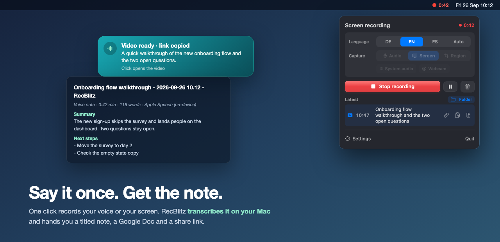
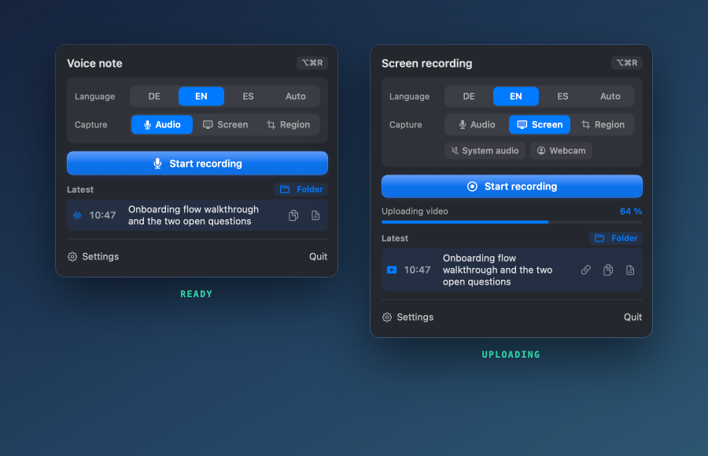
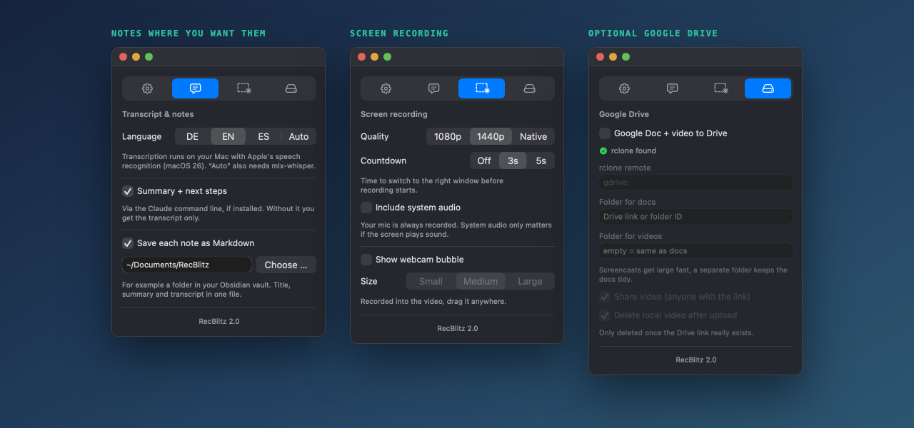

One click records your voice or your screen. RecBlitz transcribes it on your Mac and hands you a titled note, a Google Doc and a share link.

Dictation apps paste text into the window you are in. Screen recorders give you a video. RecBlitz gives you something you can find next week.

Language, what to capture, the record button and your latest recording with its actions. Same look as its sister app MeetingBlitz.
| RecBlitz | Cap | Handy | VoiceInk | QuickRecorder | |
|---|---|---|---|---|---|
| Records the screen | yes | yes | no | no | yes |
| Transcribes | on the Mac | Cap AI | on the Mac | on the Mac | no |
| Result | note, optional Doc + Drive link | share link | pasted text | pasted text | video file |
| Title + summary | yes | no | no | no | no |
| Account needed | no | yes | no | no | no |
| Stars (Sept 2026) | new | 22.8k | 32.2k | 6.6k | 8.7k |
For dictating into other apps, Handy and VoiceInk are excellent. For a Loom replacement with a team and a web player, use Cap. RecBlitz is for the case in between: you talk, and you want a note or a Doc afterwards.

Unzip, move RecBlitz.app to Applications, then clear the download quarantine once:
xattr -dr com.apple.quarantine /Applications/RecBlitz.app
Needs the Xcode Command Line Tools (xcode-select --install), about two minutes:
git clone https://github.com/Felixosk/recblitz-mac.git cd recblitz-mac ./build.sh && open dist/RecBlitz.app